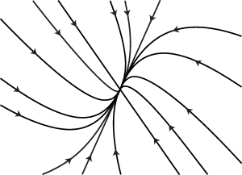
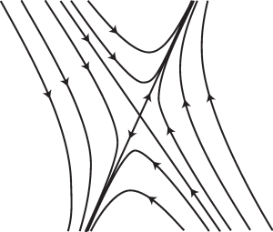
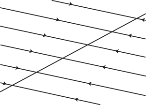
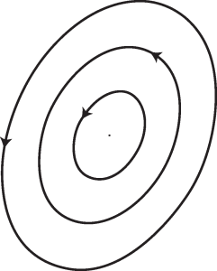
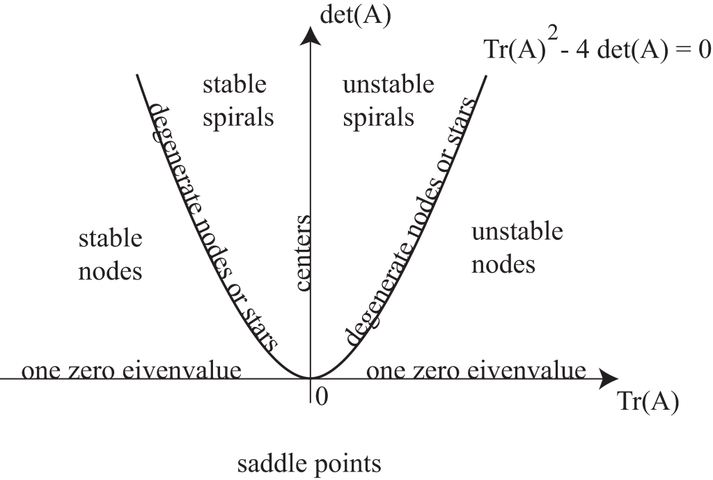

Lampiran ini mengulas secara singkat metode-metode yang paling umum untuk menyelesaikan persamaan diferensial biasa (PDB). Banyak PDB atau sistem PDB yang diperkenalkan dalam catatan ini bersifat nonlinear sehingga tidak dapat diselesaikan dengan mudah menggunakan metode-metode tersebut. Namun, analisis kestabilan linear titik tetap bertumpu pada penyelesaian sistem linear berkoefisien konstan, yang dibahas di sini. Selain itu, seorang pemodel harus mampu mengenali PDB yang dapat diselesaikan secara eksak dan menyelesaikannya jika diperlukan. Informasi di bawah ini dimaksudkan sebagai rujukan cepat; teorema-teorema diberikan tanpa bukti dan pembaca sebaiknya merujuk pada buku-buku klasik tentang persamaan diferensial untuk memperoleh perinciannya.
Definisi dan teorema dasar tentang eksistensi
Definisi
Sebuah persamaan diferensial biasa berorde adalah persamaan berbentuk
Sebuah solusi persamaan diferensial ini adalah fungsi yang dapat didiferensialkan sebanyak kali, yaitu dari peubah real , yang memenuhi Persamaan (13.1).
Sebuah syarat awal adalah penetapan nilai beserta turunan-turunannya hingga orde pada suatu titik . Syarat ini berbentuk sebagai berikut, dengan , , ... merupakan bilangan-bilangan yang diberikan:
Syarat batas menetapkan nilai kombinasi linear dari dan turunan-turunannya pada dua nilai yang berbeda.
Teorema eksistensi dan ketunggalan
Di bawah ini kami mencantumkan teorema-teorema utama tentang eksistensi dan ketunggalan solusi sistem persamaan diferensial biasa orde pertama. Perhatikan bahwa Persamaan (13.1) dapat ditulis sebagai sistem orde pertama
dengan menetapkan .
Teorema Cauchy–Peano
Jika kontinu pada persegi panjang dengan dan maka terdapat solusi dari (13.3) yang terdiferensialkan secara kontinu pada dan memenuhi , dengan
Teorema Picard–Lindelöf
Jika bersifat Lipschitz pada , yakni jika terdapat konstanta sedemikian sehingga
dan jika kontinu pada , maka terdapat solusi tunggal dari (13.3) pada yang memenuhi
Secara bersama-sama, teorema-teorema ini menyiratkan bahwa untuk sistem dinamis yang terdiferensialkan secara kontinu dan berbentuk (13.3), setiap masalah nilai awal memiliki solusi tunggal. Karena dalam (13.3) dapat bergantung secara eksplisit pada variabel bebas, kesimpulan tanpa-perpotongan berlaku dalam ruang keadaan diperluas (x,Y); untuk sistem otonom berbentuk (13.3), kesimpulan itu berlaku langsung bagi lintasan dalam ruang fase Y.
Berikut ini kami mencantumkan berbagai teknik umum yang digunakan untuk menyelesaikan persamaan diferensial. Syarat awal atau syarat batas sebaiknya diterapkan setelah solusi umum diperoleh.
Persamaan diferensial orde pertama
Kita mulai dengan persamaan diferensial orde pertama, yang kita tulis sebagai
Persamaan terpisahkan
Jika maka persamaan tersebut dapat dipisahkan dan berbentuk
yang dapat diintegralkan dengan mudah.
Contoh
Solusi masalah nilai awal adalah .
Persamaan dengan M dan N yang keduanya homogen berderajat n
Jika dan keduanya homogen berderajat , maka perubahan peubah (atau ) akan menjadikan PDB tersebut dapat dipisahkan.
Contoh
Keluarga solusi persamaan adalah , dengan konstanta sembarang. Selain keluarga ini, juga merupakan solusi dan tidak diperoleh untuk nilai parameter C yang berhingga.
Persamaan eksak
Jika dan kontinu dan jika maka PDB tersebut eksak, yaitu terdapat sedemikian sehingga
Dengan demikian, PDB dapat ditulis dalam bentuk
yang menghasilkan , yaitu . Fungsi dapat diperoleh dengan mengintegralkan kedua persamaan
Contoh
Solusi umum persamaan diberikan secara implisit oleh , dengan konstanta sembarang.
Faktor integrasi
Faktor integrasi adalah fungsi sedemikian sehingga persamaan diferensial
bersifat eksak. Jika tetapi
gunakan faktor integrasi
Jika hanya bergantung pada dan hasilnya dinamai f(x), faktor integrasinya adalah
Jika hanya bergantung pada dan hasilnya dinamai f(y), faktor integrasinya adalah
Contoh
Solusi umum persamaan diberikan secara implisit oleh .
Persamaan linear
Jika persamaan diferensial dapat ditulis dalam bentuk yaitu jika
maka PDB tersebut linear. Misalkan . Kita peroleh
dan dengan mengalikan PDB dengan , kita memperoleh
dx \right].\end{align*}
Contoh 1
Solusi umum persamaan adalah
Contoh 2
Solusi persamaan dengan syarat adalah
Persamaan Bernoulli
Jika dengan kita memperoleh persamaan Bernoulli berikut
Persamaan nonlinear ini dapat diubah menjadi bentuk persamaan linear melalui perubahan peubah .
Contoh
Keluarga solusi tak nol persamaan adalah . Solusi nol juga memenuhi persamaan.
Persamaan Riccati
Jika kita memperoleh persamaan Riccati berikut
Untuk menyelesaikannya, lakukan langkah-langkah berikut.
Carilah solusi khusus dengan mencoba fungsi-fungsi sederhana seperti atau .
Perhatikan bahwa memenuhi persamaan Bernoulli berikut (dengan ):
Ubahlah persamaan di atas menjadi persamaan linear dengan menerapkan perubahan peubah , lalu selesaikan untuk . Dalam peubah semula, solusi diberikan oleh .
Contoh
Keluarga solusi persamaan adalah . Solusi khusus juga memenuhi persamaan dan tidak termasuk dalam keluarga untuk nilai parameter C yang berhingga.
Persamaan Clairaut
Persamaan diferensial memiliki keluarga garis lurus berikut sebagai solusi
dan juga dapat memiliki solusi singular dalam bentuk parametrik
Contoh
Solusi umum persamaan adalah dan salah satu solusi singularnya adalah .
Persamaan diferensial orde kedua
Persamaan tanpa y
Persamaan diferensial orde kedua yang tidak memuat berbentuk Dengan persamaan ini menjadi yang merupakan persamaan orde pertama. Persamaan tersebut mula-mula dapat diselesaikan untuk , kemudian untuk dengan menggunakan .
Contoh
Solusi umum persamaan adalah
dengan dan konstanta sembarang. Selain keluarga tersebut, setiap fungsi konstan juga merupakan solusi.
Persamaan tanpa x
PDB jenis ini berbentuk Misalkan merupakan fungsi . Maka,
dan PDB tersebut menjadi yang merupakan persamaan diferensial orde pertama dengan sebagai peubah bebas. Persamaan ini dapat diselesaikan untuk sebagai fungsi , kemudian persamaan terpisahkan orde pertama dapat diselesaikan.
Contoh
Solusi umum persamaan diberikan secara implisit oleh
.
Persamaan linear
Solusi umum persamaan berbentuk
dengan
merupakan solusi khusus dari persamaan ,
dan merupakan dua solusi bebas linear satu sama lain dari persamaan homogen terkait
dan merupakan dua konstanta sembarang.
Dengan demikian, persamaan linear di atas diselesaikan dalam dua langkah:
Selesaikan persamaan homogen (yaitu, carilah dua solusi bebas linear dan ),
Carilah solusi khusus persamaan lengkap.
Cara menyelesaikan persamaan homogen
Solusi umum dari persamaan homogen
merupakan kombinasi linear dari dua solusi bebas linearnya dan , yaitu dengan dan konstanta.
Persamaan dengan koefisien konstan
Misalkan persamaan diferensial homogen tersebut berbentuk
dengan , , dan konstanta. Persamaan karakteristik yang terkait adalah .
Jika persamaan karakteristik mempunyai dua akar real berbeda dan , maka dua solusi bebas linear persamaan homogen tersebut adalah
Jika persamaan karakteristik mempunyai dua akar kompleks , dua solusi bebas linearnya adalah
Jika persamaan karakteristik mempunyai satu akar real berulang , dua solusi bebas linearnya adalah
Contoh 1
Solusi masalah nilai awal , , dan adalah .
Contoh 2
Solusi umum persamaan adalah .
Persamaan Cauchy–Euler
Jika PDB tersebut berbentuk
kita mencari solusi berbentuk (yang didefinisikan untuk ). Kemudian, harus memenuhi
Jika persamaan ini mempunyai dua akar real berbeda dan , maka dua solusi bebas linearnya adalah
Jika persamaan ini mempunyai dua akar kompleks , dua solusi bebas linearnya adalah
Jika persamaan ini mempunyai satu akar real berulang , dua solusi bebas linearnya adalah
Catatan: Jika Anda harus menyelesaikan persamaan untuk terlebih dahulu lakukan perubahan peubah .
Contoh
memenuhi , , .
Persamaan lain
Jika Anda mengetahui suatu solusi khusus (misalnya ditemukan melalui inspeksi) dari persamaan homogen, Anda dapat menerapkan metode variasi konstanta: carilah solusi lain berbentuk , substitusikan ke dalam persamaan homogen, lalu selesaikan persamaan orde pertama untuk . Prosedur ini disebut reduksi orde.
Cara mencari solusi khusus persamaan lengkap
Sekarang kita meninjau dan mencari solusi khusus untuk persamaan ini. Seperti sebelumnya, terdapat beberapa kasus khusus yang memiliki metode penyelesaian sistematis.
Persamaan dengan koefisien konstan: Metode koefisien tak tentu
Jika PDB tersebut memiliki koefisien konstan dan jika
dengan dan polinom berderajat , gunakan bentuk solusi khusus di bawah ini, dengan dan merupakan polinom berderajat dalam setiap kasus.
jika bukan akar persamaan karakteristik yang terkait,
jika merupakan akar dengan multiplisitas dari persamaan karakteristik yang terkait ( dapat bernilai 1 atau 2).
Catatan: Karena persamaan tersebut linear, prinsip superposisi dapat digunakan: jika , dan jika serta masing-masing merupakan solusi khusus dari dan , maka merupakan solusi khusus dari .
Contoh 1
Salah satu solusi khusus persamaan adalah .
Contoh 2
Salah satu solusi khusus persamaan adalah .
Persamaan Cauchy–Euler
Perubahan peubah akan mengubah persamaan Cauchy–Euler menjadi persamaan berkoefisien konstan, yang kemudian dapat diselesaikan seperti dijelaskan di atas.
Persamaan lain
Jika PDB tersebut tidak memiliki koefisien konstan, atau jika tidak berbentuk seperti yang dibahas di atas, Anda dapat mencoba menggunakan metode variasi konstanta: carilah solusi khusus dengan dan dua solusi bebas linear dari persamaan homogen terkait, lalu selesaikan untuk dan setelah menetapkan
Contoh
Solusi umum persamaan , adalah
.
Catatan: Terdapat cara mudah untuk memeriksa bahwa dua fungsi dan bebas linear: Wronskian keduanya
harus tak nol.
Persamaan diferensial linear berorde lebih tinggi dari dua
Solusi umum untuk
adalah
dengan
merupakan solusi partikular dari persamaan lengkap
, adalah solusi bebas linear dari persamaan homogen terkait
, adalah konstanta sembarang.
Dengan demikian, metode untuk menyelesaikan persamaan linear tersebut adalah sebagai berikut.
Selesaikan persamaan homogen (yaitu, cari solusi bebas linear ),
Cari solusi partikular dari persamaan lengkap.
Cara menyelesaikan persamaan homogen
Solusi umum dari persamaan homogen
merupakan kombinasi linear dari solusi bebas linearnya , yaitu dengan merupakan konstanta.
Persamaan dengan koefisien konstan
Misalkan persamaan homogen tersebut berbentuk
dengan merupakan konstanta real. Persamaan karakteristik terkait adalah
Jika persamaan karakteristik hanya memiliki akar sederhana , kita dapat memperoleh solusi bebas linear dengan menggunakan untuk akar real, dan solusi berikut untuk setiap pasangan akar kompleks konjugat dan :
Jika persamaan karakteristik memiliki satu atau lebih akar dengan multiplisitas lebih besar dari satu, gunakan rumus di atas untuk akar bermultiplisitas satu, dan untuk setiap akar bermultiplisitas , gunakan
\cos(\beta_i x) dan sebagai ganti (karena persamaan diferensial biasa tersebut memiliki koefisien real).
Contoh 1
Solusi umum untuk adalah
.
Contoh 2
Solusi untuk dengan , , , dan adalah
Persamaan Cauchy–Euler
Untuk menyelesaikan
dengan merupakan konstanta real, lakukan perubahan variabel . Perubahan ini menghasilkan persamaan dengan koefisien konstan untuk (sebagai fungsi ), yang dapat diselesaikan seperti diuraikan di atas. Selanjutnya, perubahan variabel menghasilkan sebagai fungsi .
Catatan: Jika harus menyelesaikan untuk lakukan perubahan variabel , lalu lanjutkan seperti sebelumnya (namun sekarang ).
Contoh
Solusi umum untuk , adalah
.
Cara mencari solusi partikular dari persamaan lengkap
Sekarang kita mencari solusi partikular untuk
Jika persamaan di atas memiliki koefisien konstan dan jika
dengan dan merupakan polinom berderajat , maka coba solusi partikular berikut, dengan dan merupakan polinom berderajat pada setiap kasus.
jika bukan akar dari persamaan karakteristik terkait.
jika merupakan akar bermultiplisitas dari persamaan karakteristik terkait.
Jika persamaan diferensial ini tidak memiliki koefisien konstan, atau jika tidak berbentuk seperti yang dibahas di atas, gunakan metode variasi konstanta: carilah solusi partikular dengan merupakan solusi bebas linear dari persamaan homogen terkait, lalu tentukan setelah memberlakukan syarat berikut:
dari tidak nol, maka fungsi-fungsi tersebut bebas linear.
Sistem persamaan diferensial linear orde pertama
Kita meninjau sistem berbentuk
yang juga dapat ditulis sebagai
dengan
dan
Jika dan kontinu pada interval , dan jika , maka terdapat solusi tunggal untuk yang memenuhi , dan berlaku pada interval .
Solusi umum untuk adalah
dengan
merupakan solusi partikular untuk ,
, merupakan solusi bebas linear dari sistem homogen terkait ,
, merupakan konstanta.
Matriks disebut matriks fundamental dari sistem homogen . Dengan demikian, untuk menyelesaikan sistem diferensial tersebut, ikuti langkah berikut.
Selesaikan sistem homogen (yaitu, cari solusi bebas linear ),
Cari solusi partikular dari sistem lengkap.
Cara menyelesaikan sistem homogen
Solusi umum untuk sistem homogen merupakan kombinasi linear dari solusi bebas linear , yaitu dengan merupakan konstanta. Dengan kata lain, solusi tersebut berbentuk
dengan merupakan matriks fundamental dan merupakan vektor konstan.
Dalam pembahasan berikut, kita hanya meninjau sistem dengan koefisien konstan; dengan kata lain, kita mengasumsikan matriks tidak bergantung pada waktu. Prosedurnya adalah sebagai berikut.
Tentukan nilai eigen dan vektor eigen dari .
Untuk setiap vektor eigen yang bersesuaian dengan nilai eigen , diketahui bahwa merupakan solusi untuk . Oleh karena itu,
Jika memiliki nilai eigen berbeda, kita telah memperoleh solusi bebas linear untuk sistem homogen, yakni , .
Jika suatu nilai eigen memiliki multiplisitas yang lebih besar dari satu, carilah sebanyak mungkin vektor eigen bebas linear, lalu tuliskan solusi yang bersesuaian . Selanjutnya, cari solusi yang belum diperoleh dalam bentuk dengan merupakan vektor konstan. Substitusikan solusi ini ke dalam sistem homogen dan tentukan . Selalu pastikan bahwa Anda telah memperoleh solusi bebas linear untuk sistem homogen, lalu tuliskan matriks fundamental yang bersesuaian.
Catatan: Jika salah satu nilai eigen bersifat kompleks, maka, karena (secara umum) memiliki koefisien real, konjugat kompleks nilai eigen tersebut juga merupakan nilai eigen. Demikian pula, jika merupakan vektor eigen (kompleks) yang bersesuaian dengan nilai eigen kompleks , maka konjugat kompleksnya bersesuaian dengan nilai eigen . Dengan demikian, jika nilai eigen bersifat kompleks, Anda dapat menggunakan fungsi real
\xi] dan sebagai ganti solusi kompleks dan .
Contoh 1
Suatu matriks fundamental untuk dengan adalah .
Contoh 2
Suatu matriks fundamental untuk dengan adalah .
Cara mencari solusi partikular dari sistem lengkap
Jika , dengan merupakan vektor konstan, dan jika bukan nilai eigen dari , maka coba solusi partikular dengan merupakan vektor konstan. Substitusikan bentuk kembali ke dalam sistem diferensial , lalu tentukan .
Catatan: Prinsip superposisi mungkin berguna. Memang, karena memiliki koefisien real, jika merupakan solusi untuk (dengan merupakan vektor konstan dan real), maka dan berturut-turut merupakan solusi untuk dan untuk . Dengan demikian, jika berbentuk atau dan jika bukan nilai eigen dari , metode di atas dapat digunakan untuk mencari solusi partikular bagi . Bagian real atau imajiner solusi tersebut (bergantung pada bentuk ) kemudian merupakan solusi partikular bagi sistem diferensial semula.
Jika metode di atas tidak dapat diterapkan, gunakan metode variasi konstanta: carilah solusi berbentuk dengan merupakan matriks fundamental yang terkait dengan sistem homogen, dan merupakan vektor yang harus ditentukan. Kemudian
memenuhi yaitu
Contoh 1
Solusi partikular untuk dengan dan
2 \\ 0 \end{pmatrix} e^t adalah .
Contoh 2
Solusi partikular untuk dengan dan adalah .
Catatan umum: Terkadang metode eliminasi (yang terdiri atas serangkaian operasi pada baris-baris sistem linear) lebih mudah diterapkan, atau sekadar lebih cepat. Metode ini juga dapat berguna jika matriks bergantung pada waktu.
Analisis bidang fase
Sekarang kita menerapkan informasi yang disajikan di atas pada analisis kestabilan linear titik-titik tetap dalam sistem dinamis dua dimensi. Misalkan sistem persamaan diferensial nonlinear
dengan memiliki titik tetap di . Linearisasi sistem di atas di sekitar diperoleh dengan menetapkan , dengan bernilai kecil, menyubstitusikan ungkapan ini ke dalam Persamaan (13.4), dan hanya mempertahankan suku-suku yang linear terhadap . Dengan demikian, kita menuliskan
dengan adalah matriks Jacobi dari di , menyatakan suku-suku nonlinear, dan kita menggunakan fakta bahwa karena adalah titik tetap dari (13.4). Matriks Jacobi dari di didefinisikan sebagai
dengan notasi berikut
Dinamika sistem linear
bergantung pada nilai eigen dan vektor eigen matriks . Kita mengetahui bahwa jika memiliki nilai-nilai eigen yang berbeda, solusi umum sistem linear tersebut berbentuk
dengan dan adalah vektor eigen dari yang masing-masing bersesuaian dengan nilai eigen dan , sedangkan dan adalah konstanta sembarang.
Titik tetap dari (13.4) stabil secara linear jika semua solusi sistem terlinearisasi (13.5) berkonvergensi menuju titik asal ketika . Hal ini hanya terjadi jika bagian real dari dan keduanya negatif, yang menyiratkan bahwa jejak juga negatif. Jika kita mengasumsikan bahwa bernilai real, seperti yang kita lakukan mulai sekarang, maka memiliki koefisien real dan nilai-nilai eigennya keduanya real atau merupakan pasangan konjugat kompleks. Dalam hal ini, suatu titik tetap yang stabil linear memenuhi dan .

Gambar 13.1 Deskripsi GambarJika kedua nilai eigen dari negatif, real, dan berbeda, maka titik tetap tersebut merupakan simpul stabil. Potret fase sistem linear (13.5) menyerupai sketsa pada Gambar 13.1. Perhatikan bahwa di titik asal, lintasan-lintasan menyinggung arah eigen yang berkaitan dengan nilai eigen paling lambat.Gambar 13.2 Deskripsi GambarJika sebanding dengan matriks identitas (yaitu, jika nilai-nilai eigen dari sama tetapi ruang eigen yang bersesuaian berdimensi dua), maka titik tetap disebut bintang.
Jika nilai-nilai eigen dari sama tetapi ruang eigen yang bersesuaian berdimensi satu, maka disebut simpul degenerat.
Gambar 13.3 Deskripsi GambarGambar 13.2 dan 13.3 masing-masing menunjukkan potret fase khas sistem linear (13.5) ketika titik tetapnya berupa bintang stabil dan simpul stabil degenerat.
Jika nilai-nilai eigen dari merupakan pasangan kompleks konjugat dengan bagian imajiner tak nol dan bagian real negatif, maka merupakan spiral stabil. Jika bagian realnya positif, spiral tersebut tak stabil. Potret fase stabil (13.5) ditunjukkan pada Gambar 13.4.
Gambar 13.4 Deskripsi GambarJika salah satu nilai eigen dari memiliki bagian real positif, maka titik tetap tak stabil secara linear. Hal ini terjadi jika , yang berarti titik tetap tersebut merupakan titik pelana, atau jika dan .

Gambar 13.5 Deskripsi GambarPotret fase dari (13.5) ketika titik asal merupakan titik pelana ditunjukkan pada Gambar 13.5. Potret fase dari (13.5) ketika titik asal merupakan simpul tak stabil, bintang tak stabil, simpul degenerat tak stabil, atau spiral tak stabil serupa dengan potret pada Gambar 13.1, 13.2, 13.3, dan 13.4, tetapi dengan arah panah yang dibalik.
Jika dan , maka salah satu nilai eigen dari adalah nol, dan sistem (13.5) memiliki satu garis titik tetap.

Gambar 13.6 Deskripsi GambarIni merupakan situasi degenerat dan dalam kebanyakan kasus, sistem dinamis (13.4) memiliki satu titik tetap, meskipun linearisasinya memiliki keluarga kontinu titik tetap. Potret fase dari (13.5) untuk kasus ketika dan ditunjukkan pada Gambar 13.6.

Gambar 13.7 Deskripsi GambarTerakhir, jika nilai-nilai eigen membentuk pasangan konjugat imajiner murni tak nol, maka stabil marginal. Sekadar mensyaratkan semua bagian real nol tidaklah cukup: sekalipun kasus diabaikan, matriks dapat nilpoten tak nol, dengan nilai-nilai eigen nol dan solusi linear yang tumbuh tak terbatas. Untuk pasangan imajiner murni tak nol, titik tetap disebut pusat linear. Dalam hal ini, tetapi . Gambar 13.7 menunjukkan potret fase sistem linear (13.5) ketika titik asal merupakan pusat (linear). Menentukan apakah titik tetap merupakan pusat nonlinear bagi sistem dinamis (13.4) memerlukan analisis lebih lanjut.
Hasil-hasil di atas dapat dirangkum dalam diagram pada Gambar 13.8, yang menunjukkan klasifikasi titik tetap dari sistem linear (13.5) sebagai fungsi jejak dan determinan .

Gambar 13.8. Klasifikasi titik tetap dari sistem linear (13.5) sebagai fungsi jejak dan determinan matriks Jacobi yang bersesuaian, . Deskripsi GambarTeorema Hartman–Grobman menyatakan bahwa untuk sistem dinamis yang mulus, sifat suatu titik tetap tidak diubah oleh suku-suku nonlinear asalkan titik tetap tersebut hiperbolik, yaitu asalkan semua nilai eigen matriks Jacobi dari linearisasinya memiliki bagian real tak nol. Oleh karena itu, analisis kestabilan linear dapat digunakan untuk mengklasifikasikan titik-titik tetap hiperbolik dari sistem dinamis nonlinear. Analisis lebih lanjut diperlukan untuk menentukan kestabilan nonlinear titik-titik tetap nonhiperbolik. Secara khusus, pusat dapat tetap menjadi pusat atau berubah menjadi spiral stabil maupun tak stabil. Metode untuk menyelidiki pengaruh nonlinearitas pada titik tetap hiperbolik dan nonhiperbolik biasanya dibahas dalam buku pengantar sistem dinamis.
Deskripsi Gambar
Gambar 13.1: Potret fase sebuah simpul stabil. Sejumlah lintasan melengkung dan lurus mengalir dari daerah luar bidang dan berkonvergensi menuju titik tetap di pusat, yaitu titik asal. Kepala panah pada setiap lintasan mengarah ke dalam dan sebagian besar lintasan berbentuk lengkung. Hal ini terjadi karena sistem meluruh lebih cepat dalam satu arah daripada arah lainnya. Lintasan-lintasan dengan cepat "mendatar" lalu mendekati titik asal sepanjang arah "lambat", sehingga menghasilkan tampilan khas yang melengkung ke belakang. [Kembali ke Gambar 13.1]
Gambar 13.2: Potret fase sebuah bintang stabil. Semua lintasan berupa garis lurus yang memancar dari batas luar dan berkonvergensi langsung menuju satu titik tetap di pusat, yaitu titik asal. Semua kepala panah mengarah ke dalam menuju pusat, yang menunjukkan titik tetap stabil. Alirannya sepenuhnya simetris, yang menunjukkan bahwa nilai-nilai eigennya identik, sehingga sistem kembali ke kesetimbangan dengan laju yang sama dari segala arah. [Kembali ke Gambar 13.2]
Gambar 13.3: Potret fase sebuah simpul stabil degenerat. Banyak lintasan berkonvergensi menuju titik tetap di pusat, yaitu titik asal. Dalam kasus degenerat ini, semua lintasan menyinggung satu garis lurus (arah eigen tunggal) ketika mendekati pusat. Semua kepala panah mengarah ke dalam, yang menunjukkan bahwa titik asal merupakan penarik stabil. [Kembali ke Gambar 13.3]
Gambar 13.4: Potret fase yang menampilkan satu spiral stabil. Tujuh lintasan melengkung berasal dari tepi luar bingkai dan berpilin ke dalam searah jarum jam, lalu berkonvergensi menuju titik tetap di pusat, yaitu titik asal. Setiap lintasan memiliki kepala panah yang menunjukkan arah aliran menuju pusat. [Kembali ke Gambar 13.4]
Gambar 13.5: Potret fase yang menunjukkan sebuah titik pelana. Aliran terdiri atas lintasan-lintasan yang mendekati pusat sepanjang satu diagonal (manifold stabil) dan terdorong menjauh sepanjang diagonal lainnya (manifold tak stabil). Pola yang dihasilkan menyerupai serangkaian kurva berbentuk seperti hiperbola yang membelok mengitari kesetimbangan pusat. Panah menunjukkan arah gerak sepanjang setiap lintasan. [Kembali ke Gambar 13.5]
Gambar 13.6: Potret fase sederhana yang terdiri atas beberapa lintasan garis lurus sejajar. Satu garis diagonal titik-titik tetap stabil memotong garis-garis aliran sejajar tersebut. Kepala panah pada setiap garis sejajar mengarah menuju titik-titik tetap. Ini bersesuaian dengan sistem (13.5) ketika salah satu nilai eigen dari bernilai nol dan nilai eigen lainnya negatif. [Kembali ke Gambar 13.6]
Gambar 13.7: Potret fase yang menunjukkan sebuah titik kesetimbangan pusat yang dikelilingi tiga orbit elips tertutup dan saling bersarang. Panah pada orbit menunjukkan arah aliran berlawanan dengan arah jarum jam, yang merepresentasikan sistem yang terus berosilasi tanpa bertumbuh ataupun meluruh. [Kembali ke Gambar 13.7]
Gambar 13.8: Diagram klasifikasi titik tetap dalam sistem linear dua dimensi. Sumbu vertikal merepresentasikan determinan, , dan sumbu horizontal merepresentasikan jejak, . Parabola yang didefinisikan oleh membagi setengah bidang atas menjadi daerah untuk simpul dan spiral. Di bawah sumbu horizontal (ketika ), semua titik diklasifikasikan sebagai titik pelana. [Kembali ke Gambar 13.8]
Bahan Renungan
Soal 1
Termasuk jenis apakah (linear, dapat dipisahkan, eksak, dapat diselesaikan setelah perubahan variabel, Riccati, Bernoulli, Clairaut) persamaan orde pertama berikut? (Jangan mencoba menyelesaikan
persamaan-persamaan tersebut).
Soal 2
Selesaikan persamaan (5) dan (6) di atas.
Soal 3
Tunjukkan bahwa merupakan solusi implisit dari
Tentukan solusi persamaan diferensial di atas yang memenuhi . Apakah masalah nilai awal yang bersesuaian memiliki solusi tunggal? Jelaskan.
Soal 4
Tentukan solusi umum dari .
Selesaikan masalah nilai awal yang terdiri atas persamaan diferensial biasa di atas dan kondisi awal dan .
Adakah solusi untuk masalah nilai batas dan ? Jika ada, apa solusinya?
Soal 5
Selesaikan persamaan diferensial
Soal 6
Selesaikan pada suatu interval yang tidak melintasi x=0.
Soal 7
Selesaikan persamaan diferensial
Soal 8
Selesaikan sistem persamaan diferensial berikut
Soal 9
Selesaikan sistem dengan
Soal 10
Selesaikan persamaan diferensial
Soal 11
Selesaikan dengan kondisi awal .
Jawaban
Soal 1
Dapat dipisahkan.
merupakan faktor integrasi.
Homogen berderajat 2.
Linear.
Linear.
Eksak.
Bernoulli dengan
Soal 2
(5):
(6):
Soal 3
Karena ruas kanan bentuk eksplisit persamaan diferensial kontinu dan Lipschitz lokal terhadap y di sekitar (0,3), dengan penyebut 1+y tidak nol, masalah nilai awal tersebut memiliki solusi lokal tunggal.
Soal 4
Ya,
Soal 5
Soal 6
Keluarga ini berlaku secara terpisah pada interval dengan x positif atau x negatif.
Soal 7
Soal 8
Kondisi awal memberikan C1=C2=2.
Soal 9
Soal 10
Soal 11
Petunjuk, pemeriksaan, dan pembahasan
Bagian tambahan ini ditulis untuk edisi Bahasa Indonesia. Bukalah seperlunya setelah Anda berusaha menyelesaikan soal secara mandiri.
Uji tiap persamaan dengan kriteria yang paling langsung: pisahkan faktor yang hanya bergantung pada dan ; untuk bentuk , bandingkan dan ; untuk linearitas, susun sebagai ; dan untuk Bernoulli cari bentuk .
Periksa jawaban
Pemeriksaan akhir
Klasifikasinya adalah: (1) dapat dipisahkan pada setiap interval yang tidak memuat ; (2) menjadi eksak setelah dikalikan faktor integrasi ; (3) homogen berderajat dua sehingga dapat memakai ; (4) linear pada setiap interval yang tidak memuat ; (5) linear pada setiap interval yang tidak memuat ; (6) eksak; dan (7) Bernoulli dengan pangkat .
Cek cepat
Untuk (2), , sehingga dan . Untuk (6), kedua turunan silang sama dengan . Untuk (7), pembagian dengan memberi .
Pembahasan atau rubrik
Langkah penyelesaian
Penjelasan
Pisahkan persamaan pertama dengan mengumpulkan semua faktor bersama dan semua faktor bersama .
Rumus
Penjelasan
Untuk persamaan kedua, selisih turunan silang berbanding tepat dengan , sehingga faktor integrasinya hanya bergantung pada .
Rumus
Penjelasan
Pada persamaan ketiga, kedua koefisien bentuk diferensial berskala dengan pangkat dua ketika diganti oleh .
Rumus
Penjelasan
Persamaan keempat dan kelima dapat disusun secara linear terhadap .
Rumus
Penjelasan
Turunan silang persamaan keenam sama, sehingga bentuk diferensialnya eksak.
Rumus
Penjelasan
Persamaan ketujuh adalah Bernoulli; substitusi juga langsung mengubahnya menjadi persamaan linear.
Rumus
Simpulan
Ketujuh klasifikasi jawaban tercetak benar. Persamaan (1) tidak memiliki solusi real melalui , sebab persamaan asal di titik itu menjadi . Pembatasan interval pada (4) dan (5) diperlukan karena koefisien bentuk normal singular di ; persamaan (3) juga mensyaratkan agar logaritma real terdefinisi.
Untuk (5), gunakan bentuk linear yang diperoleh pada Soal 1 dan faktor integrasi ; setelah memperoleh keluarga pada , periksa khusus nilai parameter yang mungkin meniadakan singularitas di nol. Untuk (6), integralkan koefisien terhadap , lalu cocokkan turunannya terhadap dengan koefisien .
Periksa jawaban
Pemeriksaan akhir
Pada setiap interval atau , solusi umum (5) adalah . Untuk , singularitasnya dapat dihilangkan: tetapkan sehingga diperoleh solusi analitik yang melintasi nol. Solusi implisit (6) adalah .
Cek cepat
Substitusi solusi (5) ke memberi nol identik untuk . Jika , deretnya adalah , yang memenuhi persamaan juga di nol. Untuk (6), potensial memenuhi dan .
Pembahasan atau rubrik
Langkah penyelesaian
Penjelasan
Susun persamaan (5) dalam bentuk linear.
Rumus
Penjelasan
Hitung faktor integrasi pada satu interval yang tidak melintasi nol.
Rumus
Penjelasan
Integralkan persamaan yang telah menjadi turunan hasil kali.
Rumus
Penjelasan
Kasus meniadakan suku singular dan mempunyai perluasan analitik melalui nol.
Rumus
Penjelasan
Untuk (6), integrasikan terhadap .
Rumus
Penjelasan
Pencocokan memberi , sehingga kurva aras adalah solusi.
Rumus
Simpulan
Kedua jawaban tercetak benar sebagai keluarga pada . Solusi (5) umumnya berlaku pada interval yang tidak memuat nol, tetapi pilihan memiliki singularitas yang dapat dihilangkan dan meluas analitik melalui dengan . Solusi (6) bersifat implisit dan cabang eksplisitnya harus dipilih di daerah tempat teorema fungsi implisit berlaku.
Turunkan kedua ruas secara implisit dan gunakan . Untuk konstanta, substitusikan . Keunikan dapat diperiksa setelah menulis di sekitar .
Periksa jawaban
Pemeriksaan akhir
Solusi yang memenuhi data awal adalah , dengan cabang . Solusi ini unik: mulus terhadap di sekitar , sehingga teorema eksistensi–keunikan berlaku. Pada cabang , ruas kiri naik dari ke , sehingga relasi implisit menentukan tepat satu untuk setiap .
Cek cepat
Turunan ruas kiri terhadap adalah , sedangkan turunan adalah . Pada , kedua ruas bernilai .
Pembahasan atau rubrik
Langkah penyelesaian
Penjelasan
Turunkan fungsi logaritmik terhadap .
Rumus
Penjelasan
Diferensiasi implisit menghasilkan kembali persamaan sumber.
Rumus
Penjelasan
Gunakan data awal untuk menentukan konstanta.
Rumus
Penjelasan
Fungsi ruas kanan bentuk eksplisit tidak singular di sekitar data awal karena .
Rumus
Penjelasan
Cabang data awal berada pada ; monotisitas fungsi logaritmik di cabang ini memberi keunikan global relasi implisit.
Rumus
Simpulan
Rumus tercetak untuk kurva solusi benar, tetapi kelompok jawaban sumber tidak menjawab bagian penjelasan keunikan. Solusi kesetimbangan dan juga memenuhi ODE, namun tidak termasuk dalam keluarga logaritmik dan tidak memenuhi data awal ini.
Faktorkan persamaan karakteristik. Untuk setiap pasangan syarat, substitusikan langsung ke solusi umum dan selesaikan sistem linear bagi kedua konstanta.
Periksa jawaban
Pemeriksaan akhir
Solusi umum pada adalah . Masalah nilai awal mempunyai solusi unik . Masalah nilai batas mempunyai satu-satunya solusi .
Cek cepat
Untuk IVP, memberi dan memberi . Untuk BVP, syarat kedua memberi , sehingga kedua konstanta nol.
Pembahasan atau rubrik
Langkah penyelesaian
Penjelasan
Faktorkan polinom karakteristik.
Rumus
Penjelasan
Dua akar berbeda menghasilkan dua solusi eksponensial bebas linear.
Rumus
Penjelasan
Terapkan syarat awal.
Rumus
Penjelasan
Untuk syarat batas, gunakan kembali .
Rumus
Simpulan
Ketiga bagian jawaban tercetak benar; koefisien ODE kontinu di seluruh garis real, sehingga tidak ada pembatasan domain tambahan.
Gunakan keluarga umum tercetak atau diagonal kompleks matriks . Setelah mendapatkan solusi umum, terapkan kedua syarat awal; keduanya harus menentukan dua konstanta.
Periksa jawaban
Pemeriksaan akhir
Syarat awal memberi dan . Jadi solusi unik pada seluruh adalah dan .
Cek cepat
Pada , diperoleh dan . Diferensiasi langsung memberi residual nol pada kedua persamaan sistem.
Pembahasan atau rubrik
Langkah penyelesaian
Penjelasan
Matriks homogen mempunyai nilai eigen , sehingga basis real solusi homogen berbentuk sinus–kosinus dengan faktor .
Rumus
Penjelasan
Coba solusi partikular berbentuk vektor konstan kali .
Rumus
Penjelasan
Gabungkan bagian homogen dan partikular.
Rumus
Penjelasan
Gunakan data awal untuk menentukan kedua konstanta yang tidak ditentukan dalam jawaban sumber.
Rumus
Simpulan
Keluarga umum yang dicetak sumber benar, tetapi jawaban sumber tidak menyelesaikan IVP karena membiarkan kedua konstanta bebas. Penerapan syarat awal menghasilkan solusi unik di atas.
Faktorkan polinom karakteristik menjadi . Pemaksa sinusoidal tidak beresonansi, sedangkan beresonansi dengan akar , sehingga ansatz polinomialnya harus dikalikan satu faktor .
Periksa jawaban
Pemeriksaan akhir
Solusi umum pada adalah .
Cek cepat
Untuk , , yang memberi koefisien dan . Substitusi seluruh solusi ke ODE menghasilkan residual nol.
Pembahasan atau rubrik
Langkah penyelesaian
Penjelasan
Faktorkan polinom karakteristik dan tuliskan solusi homogen.
Rumus
Penjelasan
Gunakan eksponensial kompleks untuk pemaksa .
Rumus
Penjelasan
Ambil bagian real untuk memperoleh solusi partikular sinusoidal.
Rumus
Penjelasan
Untuk pemaksa resonan , tulis ; operator pada menjadi .
Rumus
Penjelasan
Ansatz memberi kedua koefisien.
Rumus
Simpulan
Jawaban tercetak benar dan terverifikasi secara simbolik; koefisien serta pemaksa terdefinisi untuk semua .
Periksa keeksakan dengan membandingkan dan . Integrasikan terhadap , lalu gunakan syarat awal untuk menentukan konstanta kurva aras.
Periksa jawaban
Pemeriksaan akhir
Solusi implisit yang melalui adalah . Relasi ini menentukan cabang solusi lokal yang unik di sekitar , karena . Cabang maksimal harus tetap berada di daerah tempat ; kurva tidak dapat memuat karena konstanta arasnya positif.
Cek cepat
Dengan , diperoleh dan . Selain itu, .
Pembahasan atau rubrik
Langkah penyelesaian
Penjelasan
Hitung kedua turunan silang.
Rumus
Penjelasan
Integrasikan terhadap .
Rumus
Penjelasan
Bandingkan dengan untuk menentukan fungsi tambahan.
Rumus
Penjelasan
Gunakan syarat awal untuk menentukan konstanta.
Rumus
Penjelasan
Periksa keberadaan cabang eksplisit lokal melalui teorema fungsi implisit.
Rumus
Simpulan
Jawaban tercetak benar. Bentuk implisit adalah bentuk alami solusi; domain cabang eksplisit dibatasi oleh titik tempat koefisien , yaitu , menjadi nol.